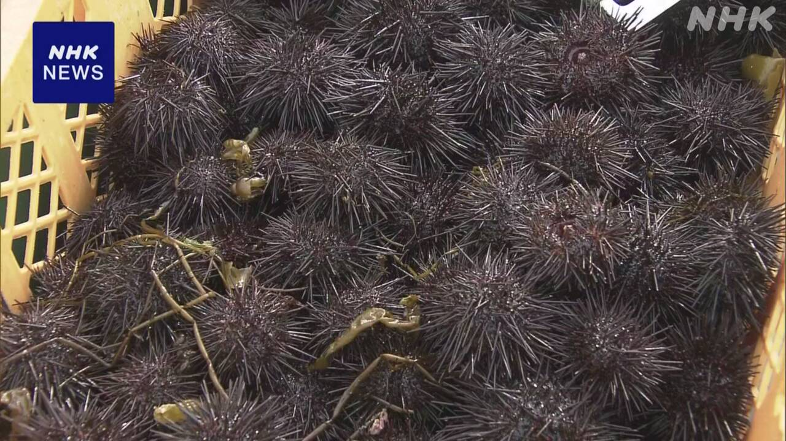

最新ニュース
1️⃣ 高校生が乗っていたバスの事故 運転していた男を逮捕
6日、福島県で起こった事故のニュースです。
新潟市の高校の生徒たちが乗っていたバスが、高速道路でガードレールにぶつかりました。
生徒1人が亡くなって、20人がけがをしました。警察は、バスを運転していた68歳の男を逮捕しました。
このバスは、レンタカーでした。バスと運転する男を紹介した会社は、高校に頼まれたと言っています。
しかし、高校は、レンタカーを頼んでいないと話しています。
2️⃣ アメリカの裁判所「トランプ大統領が決めた関税は法律に違反」
トランプ大統領が決めた関税についてのニュースです。
アメリカの裁判所は、7日、トランプ大統領が今年2月に始めた10％の関税について、法律に違反していると言いました。
トランプ大統領は、去年、「IEEPA」という法律を使って、外国から輸入する物の関税を高くする命令を出しました。しかし、裁判所が、今年2月、この法律で大統領が命令を出すことはできないと言いました。
このあとすぐ、トランプ大統領は、別の法律を使って、新しく10％の関税を取り始めていました。そして、この関税についてもアメリカの裁判所は、法律に違反していると言いました。
トランプ大統領は「裁判所には、何も驚かない。また別の方法を考える」と話しています。
3️⃣ 母の日のメッセージ「乳がんの検診を受けて」
10日は、母の日です。
東京都は、お母さんたちに乳がんの検査を受けてもらうために、メッセージカードを配っています。カードには「いつまでも元気でいてほしいから、乳がんの検査を受けてね」と書いてあります。母の日のプレゼントや花を売る店で、レジの横などにカードを置いています。
店に来た女性は「このカードをもらうと、検査のことを考えるので、いいと思います」と話していました。
がんの研究をしている団体によると、乳がんを早く見つけて治療を受けた場合、10年以上、生きている人は90％ぐらいというデータがあります。
4️⃣ 山で火事があった岩手県大槌町 ウニの漁が始まった

山で火事があった岩手県の大槌町で、ウニの漁が始まりました。
大槌町では、いつも4月下旬にウニの漁を始めます。しかし、今年は、火を消すヘリコプターが海の水をくむのを邪魔しないように、漁を始めていませんでした。
火事が広がる危険が低くなって、8日から漁が始まりました。朝7時ごろ、ウニを取った船が港に戻ってきました。
漁をした人は「ウニを取ることができて、安心しました。これから頑張りたいです」と話していました。
- 〜ている / 〜でいる
- 〜しか〜ない
- 〜について
- 〜ところ
- 〜から
- 〜という
- 〜こと
- 〜後 / 〜あと
- 〜ても / 〜でも
- 〜ため
- 〜てもらう / 〜でもらう
- 〜ため(に)
- 〜まで
- 〜など
- 〜ので
- 〜と思う
- 〜によると
- 〜以上
- 〜がある / 〜がいる
- 〜くらい / 〜ぐらい
- 〜ように
- 〜ごろ
- 〜ことができる
vebaev.github.io
Generated: 2026-05-08 11:18:52 UTC